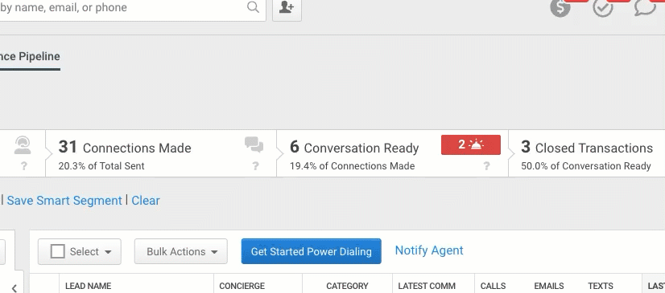
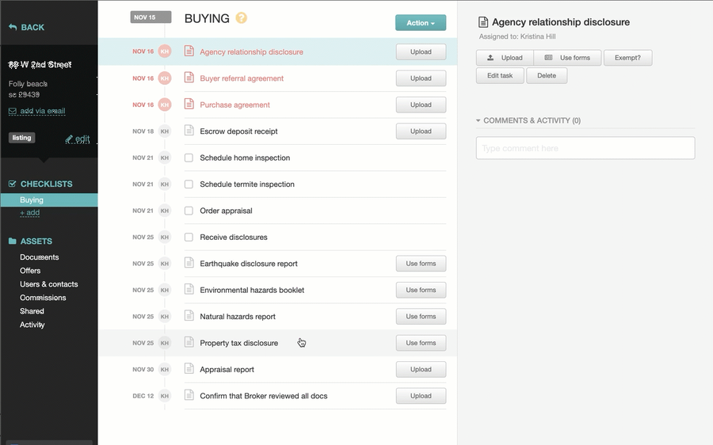

Product Leader — Mobile & AI-Driven Experiences
Nearly 17 years owning high-usage product experiences end-to-end — from a mobile CRM used by thousands of agents daily to an AI-powered camera pipeline I designed and built myself. I move between user research, design, and working code. What I care about most is confidence — making sure every interaction does exactly what a person expects.
Download Résumé →Case Study 01 — Independent Build
Generic gardening advice ignores what actually matters: your ZIP code, your USDA hardiness zone, your local frost dates. Most gardening apps give the same tips to everyone.
I designed and built the entire product end-to-end using Claude Code — from interaction design through working code — reasoning over structured location and climate inputs (ZIP code, USDA hardiness zone, frost dates) to generate genuinely personalized guidance per user, not templated content.
The camera does the core work: a user photographs a plant, and the AI has to correctly classify what it's looking at — a healthy plant, a pest, a disease, or something else entirely like fertilizer or seeds — then route each case differently. A pest gets advice, a confusing photo gets a clarifying question instead of a wrong guess, fertilizer lands in a virtual shed, seeds get added to a planting calendar. Every classification and routing rule is mine.
Early versions would guess when something was ambiguous, or fail to use data the app already had. I rewrote the instructions to force the model to ask when a photo was unclear and to pull the correct data from the app before responding — the same automation-vs-trust tradeoff I navigate professionally at BP Logix, just self-directed end to end.
A live, independently-shipped App Store app now generating revenue from paying users — proof I can take an AI product, camera pipeline included, from idea to production without a hand-off.
Case Study 02
Pharmaceutical companies manage publication workflows — scientific content that is high-stakes, compliance-bound, and increasingly touched by AI. Teams needed AI assistance without losing trust in the accuracy of medical and scientific content.
I led UX strategy for AI-driven features on PubPro, designing interaction models that keep AI agents transparent and appropriately deferential to human oversight — surfacing confidence, sourcing, and the moments where a human reviewer needs to step in, rather than letting AI output pass as fact. Rather than static mockups, I prototype these features directly in code with Claude Code, so stakeholders are reacting to something that behaves like the real thing — edge cases included — before engineering commits to building it.
A research-informed roadmap and shipped AI features that pharma stakeholders trust precisely because the design never hides where the AI's judgment ends and a human's begins.
Case Study 03
Nearly a decade directing feature design and delivery for a B2B SaaS real estate CRM used daily by agents and teams across desktop, iOS, and Android — where every workflow decision showed up directly in support ticket volume, agent adoption, and revenue.
I owned design end-to-end: turning requirements into user stories, prototypes, and acceptance criteria, then running client and internal critique sessions to keep decisions grounded in real usage. The product's in-platform communication experience — call, email, and text logging built directly into the lead workflow, visible in the Bulk Actions screens below — was mine to design as much as any single feature. Selected work:
Ran discovery across every ticket in the client services queue to find which manual tasks agents could safely self-serve, then designed a feature letting them act on many leads at once without contacting Support.
Reduced incoming tickets by ~42/week, saving $139K/year in operating costs.
Partnered with a third-party ad platform to let agents build and purchase Facebook/Instagram listing ads from inside their own CRM, plus an ROI report so they could see what their ad spend actually returned.
Generated $380K in revenue in its first year.
Designed a drag-and-drop workflow for packaging real-estate documents and sending them out for legally-binding e-signature, integrating HelloSign's UI seamlessly into the existing product.
Increased e-sign adoption 48%; let 10% of the client base drop other third-party e-sign tools entirely.


Case Study 04
Cardiovascular risk is shaped by dozens of everyday factors — sleep, stress, diet, activity, medication adherence — scattered across EHRs, home health devices, and a patient's own memory. Nobody had one clear picture of it.
I led a small design team building ALYKA from the ground up: flows that pull EHR data, device data, and self-reported input into a single personalized wellness report and heart-risk score, then translate that into a simple daily plan — goals, screening reminders, and a care team a patient can actually coordinate in one place.
A 0-to-1 app shipped to the App Store that turns clinical complexity into something a patient can understand and act on daily, without feeling like a medical chart.